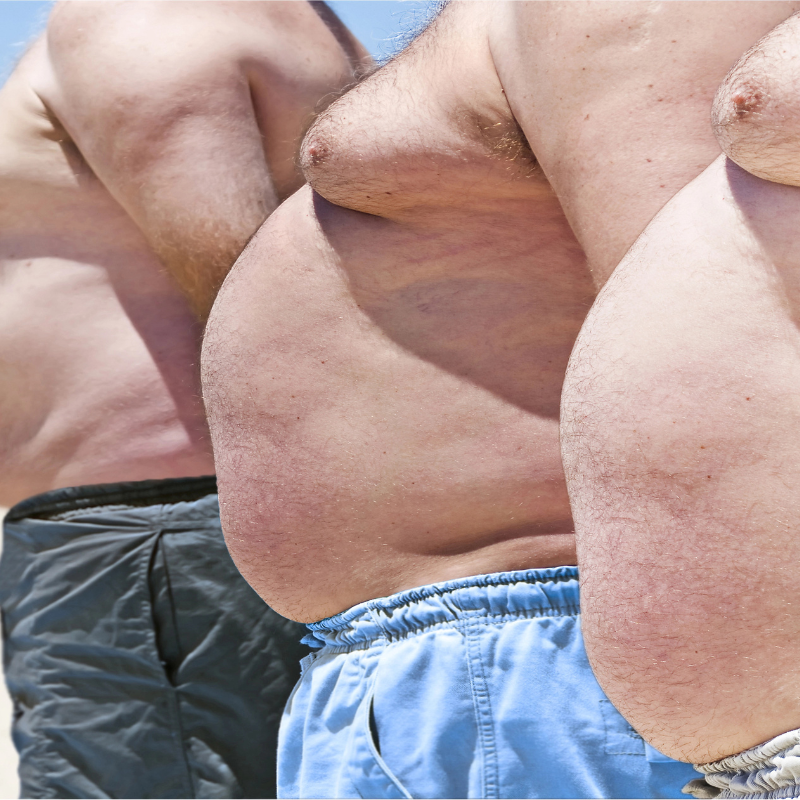
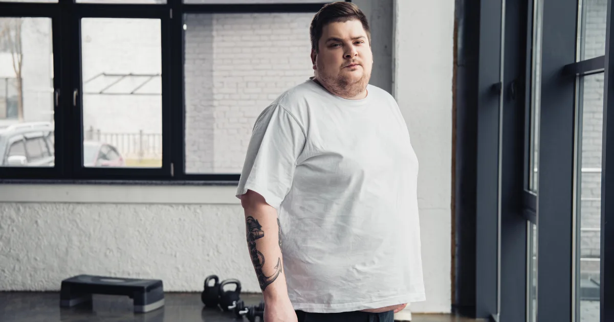

Stupně obezity: BMI tabulka a zdravotní rizika
Obezita není jen estetický problém – je to chronické onemocnění, které výrazně zvyšuje riziko celé řady dalších zdravotních komplikací. Světová zdravotnická organizace (WHO) rozlišuje tři stupně obezity podle hodnoty BMI. Každý stupeň přináší jiná rizika a vyžaduje jiný přístup k léčbě.
V tomto článku se dozvíte, jak se obezita klasifikuje, jaká zdravotní rizika jednotlivé stupně přinášejí, jak na tom je Česká republika a jaké jsou možnosti léčby.

Klasifikace obezity podle BMI
BMI (Body Mass Index) je základním nástrojem pro orientační posouzení hmotnosti. Vypočítá se jako hmotnost v kilogramech dělená druhou mocninou výšky v metrech. Spočítejte si své BMI zde.
| Kategorie | BMI | Zdravotní riziko |
|---|---|---|
| Podváha | Méně než 18,5 | Zvýšené (podvýživa) |
| Normální hmotnost | 18,5–24,9 | Minimální |
| Nadváha | 25,0–29,9 | Mírně zvýšené |
| Obezita 1. stupně | 30,0–34,9 | Zvýšené |
| Obezita 2. stupně | 35,0–39,9 | Vysoké |
| Obezita 3. stupně (morbidní) | 40,0 a více | Velmi vysoké |
Je důležité si uvědomit, že BMI má svá omezení – nerozlišuje mezi tukem a svalovou hmotou a neříká nic o rozložení tuku v těle. Více o alternativních metodách měření najdete v článku BMI vs. jiné metody.

Obezita 1. stupně (BMI 30–34,9)
Obezita 1. stupně je nejčastější formou obezity. Mnoho lidí si ani neuvědomuje, že do této kategorie spadá – zvláště pokud se cítí relativně zdravě. Přesto už v tomto stadiu narůstají zdravotní rizika.
Zdravotní rizika
- Zvýšený krevní tlak (hypertenze)
- Zvýšená hladina cholesterolu a triglyceridů
- Prediabetes a počínající inzulinová rezistence
- Bolesti kloubů (zejména kolena, kyčle)
- Horší kvalita spánku, mírná spánková apnoe
Doporučený přístup
Úprava stravy a zvýšení pohybové aktivity. Cílem je ztráta 5–10 % tělesné hmotnosti, což prokazatelně snižuje většinu zdravotních rizik. Většinou není potřeba léky ani chirurgie – stačí důslednost. Začněte průvodcem snižováním BMI.
Obezita 2. stupně (BMI 35–39,9)
Při obezitě 2. stupně jsou zdravotní rizika už výrazná a často se projevují konkrétními diagnózami.
Zdravotní rizika
- Diabetes mellitus 2. typu
- Kardiovaskulární onemocnění (ischemická choroba srdeční)
- Výrazná spánková apnoe
- Omezená pohyblivost a bolesti pohybového aparátu
- Zvýšené riziko některých nádorových onemocnění
- Deprese a snížená kvalita života
Doporučený přístup
Kombinace dietních opatření, pravidelného pohybu a často i farmakoterapie. Při přidružených onemocněních může lékař zvážit léky na hubnutí na předpis. Bariatrická chirurgie je možností, pokud konzervativní léčba selže.
Obezita 3. stupně – morbidní (BMI 40+)
Obezita 3. stupně, označovaná jako morbidní, představuje bezprostřední ohrožení zdraví a života. V tomto stadiu je léčba nutná a obvykle vyžaduje multidisciplinární přístup.
Zdravotní rizika
- Všechna rizika obezity 1. a 2. stupně ve zvýšené míře
- Výrazně zkrácená očekávaná délka života (o 5–20 let)
- Těžká spánková apnoe, respirační selhání
- Srdeční selhání
- Imobilita a ztráta soběstačnosti
- Psychické problémy (izolace, deprese, úzkosti)
Doporučený přístup
Bariatrická chirurgie (žaludeční bypass, tubulizace žaludku) je často nejúčinnější metodou. Pacienti s BMI nad 40 (nebo nad 35 s přidruženými nemocemi) jsou indikováni k chirurgické léčbě. Zároveň je nutná dlouhodobá nutriční a psychologická podpora.
Obezita v České republice
Česká republika patří k zemím s vysokým výskytem nadváhy a obezity v Evropě. Statistiky ukazují znepokojivý trend:
| Ukazatel | Hodnota |
|---|---|
| Nadváha nebo obezita (dospělí) | ~60 % populace |
| Obezita (BMI 30+) | ~26 % mužů, ~25 % žen |
| Morbidní obezita (BMI 40+) | ~3 % populace |
| Nadváha u dětí | ~20 % dětí 5–17 let |
| Trend | Stoupající (zejména u mladé generace) |
Příčiny nárůstu obezity
- Sedavý životní styl – práce u počítače, málo pohybu
- Dostupnost ultra-zpracovaných potravin – fast food, slazené nápoje, průmyslové svačiny
- Větší porce – průměrná porce v restauracích se za posledních 30 let výrazně zvětšila
- Stres a nedostatek spánku – podporují emocionální přejídání
- Nedostatečná prevence – malá osvěta o zdravém stravování a pohybu
Pokud vás zajímá, jak obezita dopadá na děti, přečtěte si článek BMI u dětí.
Možnosti léčby obezity
Léčba obezity by měla být vždy komplexní a přizpůsobená konkrétnímu stupni a zdravotnímu stavu pacienta.
| Stupeň | Primární léčba | Doplňková léčba |
|---|---|---|
| Nadváha (BMI 25–29,9) | Dieta + pohyb | Nutriční poradce |
| Obezita 1. st. (30–34,9) | Dieta + pohyb + behaviorální terapie | Farmakoterapie (při neúspěchu) |
| Obezita 2. st. (35–39,9) | Dieta + pohyb + farmakoterapie | Bariatrická chirurgie (s komorbiditami) |
| Obezita 3. st. (40+) | Bariatrická chirurgie | Celoživotní nutriční a psychologická podpora |
Kam se obrátit
- Praktický lékař – první kontakt, základní vyšetření
- Obezitologické ambulance – specializovaná péče (IKEM, FN Motol, FN Brno aj.)
- Nutriční terapeut – individuální jídelníček
- Psycholog/psychiatr – emocionální přejídání, poruchy příjmu potravy
Shrnutí
- Obezita se dělí na 3 stupně podle BMI: 1. stupeň (30–34,9), 2. stupeň (35–39,9), 3. stupeň (40+)
- S každým stupněm rostou zdravotní rizika – od hypertenze po srdeční selhání
- V ČR trpí nadváhou nebo obezitou přibližně 60 % dospělých
- Léčba závisí na stupni: od diety a pohybu po bariatrickou chirurgii
- Už ztráta 5–10 % hmotnosti výrazně snižuje zdravotní rizika
Prvním krokem je zjistit, kde stojíte. Spočítejte si své BMI a pokud spadáte do kategorie nadváhy nebo obezity, přečtěte si náš kompletní průvodce snížením BMI.